Comme d'autres villes et villages du Donbass Snejnoe (Snijne en ukrainien) a payé un lourd tribut au conflit qui ravage l'est de l'Ukraine depuis le printemps 2014. La majorité de ses habitants apportèrent leur soutien à l'insurrection dès le début du conflit et un certain nombre prit les armes lorsque le nouveau gouvernement ukrainien décida de répondre par la force à leurs revendications.
31 de ses habitants perdirent la vie au combat en 2014 et en 2015 : tous étaient des citoyens ordinaires, pour beaucoup ouvriers et mineurs, attachés à leur ville, leur région et souvent décrits comme patriotes par leurs proches.
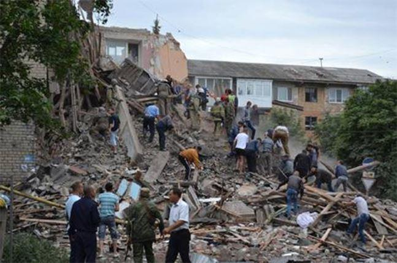
D'UN VILLAGE COSAQUE À UNE VILLE MINIÈRE MARQUÉE PAR LA SECONDE GUERRE MONDIALE
Fondé en 1784 par le Cosaque Ivan Vassiliev dont il gardera le nom de Vassilievka jusqu'en 1864, le village de Snejnoe vit l'ouverture de mines de charbon vers 1900. Le développement de l'industrie lourde et en particulier du secteur minier dans le cadre des plans quinquennaux lancés par Staline dans les années 1930 transforma Snejnoe en une ville dont l'activité ouvrière et minière a profondément marqué son identité et celle de ses habitants jusqu'à nos jours.
Durant la Seconde Guerre Mondiale l'oblast de Donetsk fut le théâtre de très violents combats, comme ce fut le cas du 17 juillet au 31 août 1943 lors de la bataille de Saour-Moguila à laquelle participèrent les divisions blindées SS Totenkopf et Das Reich. Occupée par la Wehrmacht à la fin du mois d'octobre 1941,
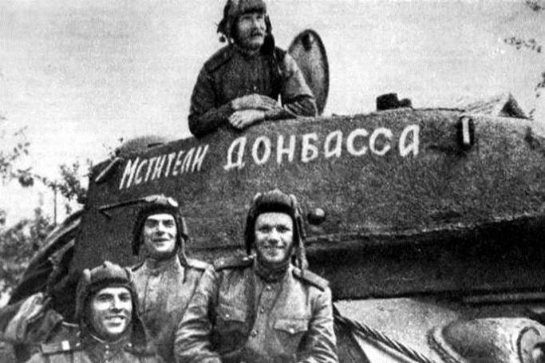Snejnoe fut libérée par l'Armée Rouge au début du mois de septembre 1943 dans la foulée de sa victoire à Saour-Moguila. Le souvenir de la Grande Guerre Patriotique, des exactions commises par les forces de l'Axe et du sacrifice des 23238 soldats et officiers de la 5ème Armée de Choc soviétique1 durant les combats menés dans la région de Saour-Moguila est très présent parmi la population locale.
SNEJNOE DANS LA TOURMENTE DE LA GUERRE DU DONBASS
La présence de militants nationalistes ukrainiens des mouvements Svoboda (Union panukrainienne « Liberté » d'Oleh Tyahnybok) et Praviï Sektor (Secteur Droit de Dmytro Iaroch) lors des événements de la place Maïdan à Kiev à la fin 2013-2014, lors du massacre de la Maison des Syndicats à Odessa le 2 mai 2014 puis au sein des bataillons Aïdar, Azov, Dnipro ou Donbas combattant dans l'est de l'Ukraine, a ravivé cette mémoire collective parmi les russophones du Donbass pour qui l'Histoire semblait se répéter.
À Snejnoe la population locale était dans sa très grande majorité sceptique voire hostile à l'égard de l'Euro-Maïdan puis apporta son soutien au mouvement demandant la fédéralisation de l'Ukraine. Lorsque Kiev répondit à ces revendications en lançant son « opération antiterroriste » le 15 avril 2014 et en bombardant les localités de la région, Snejnoe choisit alors le camp des « séparatistes pro-russes ». Parmi ses habitants, des hommes et des femmes ordinaires s'organisèrent le 14 juin pour la défense de leur ville et combattirent également durant l'été 2014 puis en 2015 à Chirokino, Spartak, Debaltsevo, Komsomolske, Peski, à l'aéroport de Donetsk ou à Saour-Moguila.
Ainsi, 71 ans après la célèbre bataille, le kourgane de Saour-Moguila fut de nouveau le témoin de combats extrêmement intenses s'étendant de début juin au 26 août 2014, cette fois entre forces gouvernementales ukrainiennes et forces insurgées locales. Le 7 juin 2014 les insurgés pro-russes s'étaient déployés à Snejnoe et sur la colline de Saour-Moguila d'où ils repoussèrent plusieurs assauts de la 79ème Brigade Aéromobile ukrainienne, avant d'être attaqués par le bataillon Azov à partir du 6 juillet2. Sur ce tumulus très élevé dont la valeur stratégique était aussi importante en 1943 qu'en 2014, le vaste mémorial érigé dans les années 1960 puis ses ruines servirent de retranchements qui changèrent plusieurs fois de main. Au début du mois d'août (le 7 selon Zakhar Prilepine3, le 9 selon certaines sources4 ou le 12 selon d'autres5) le kourgane fut pris par le 8ème Régiment de Spetsnaz ukrainien6, avant d'être repris par les insurgés le 26.
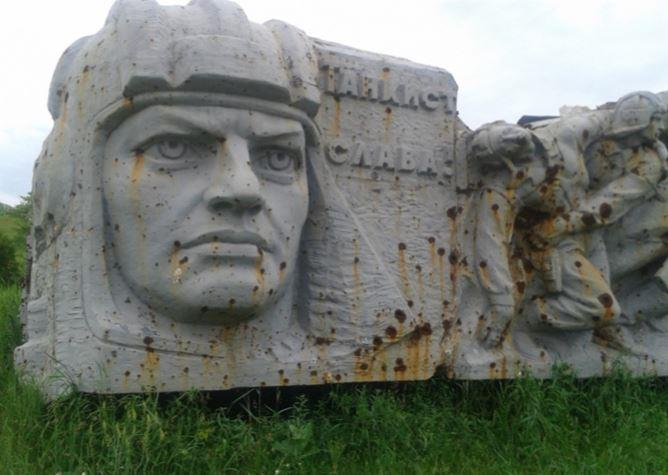
Photo : le mémorial de Saour-Moguila marqué par les combats de 2014. Source : Gilles-Emmanuel Jacquet.
Au cours de ce terrible été 2014 Snejnoe fut bombardée par les forces gouvernementales et le 15 juillet, vers 6h30 du matin, un immeuble d'habitation situé au 14 de la rue Lénine fut frappé par une attaque aérienne ukrainienne faisant des dizaines de morts et de blessés, tous civils. Le même jour Dmitrovka fut touchée par des tirs de roquettes BM-21 Grad tuant un insurgé et 9 civils7.
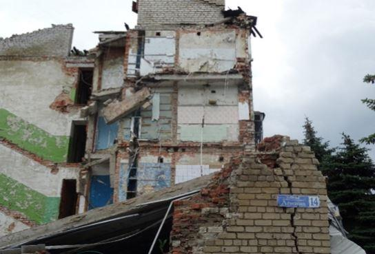
Photo : ruines de l'immeuble du 14 rue Lénine détruit par l'aviation ukrainienne le 15 juillet 2014. Source : Gilles-Emmanuel Jacquet.
LES HÉROS ORDINAIRES DE SNEJNOE
Dans un coin de la bibliothèque municipale de Snejnoe, entre une rangée d'ordinateurs et un rayon d'ouvrages consacrés à la Grande Guerre Patriotique et à la guerre d'Afghanistan, un petit mémorial a été installé en l'honneur des insurgés locaux tués durant les combats de 2014-2015. Sur un autel une bougie brûle près d'une petite croix, d'un drapeau russe et de quelques livres traitant du conflit dans le Donbass.
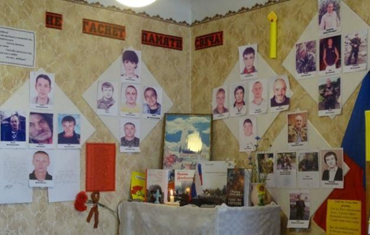
Photo : mémorial dédié aux insurgés de Snejnoe tombés lors des combats de 2014-2015. Source : Gilles-Emmanuel Jacquet.
Tout autour, sur le mur, on peut voir les photos et les portraits des 33 habitants de Snejnoe tombés au champ d'honneur alors qu'ils servaient au sein des forces insurgées. Des poèmes et des lettres adressés par certains combattants à leurs proches sont affichés sur le mur. La responsable de la bibliothèque, Lyoudmila Lysenko, connaît tout de leur vie, de leurs faits d'armes ou des circonstances de leur mort dont elle a conservé la mémoire dans un ouvrage publié en 2016. [8] Rencontrée en 2016 à Snejnoe peu de temps après la publication de son livre, Lyoudmila Lysenko avait évoqué le parcours de certains d'entre eux.
Le 14 juin 2014 Nikolaï Perounkov, Andreï Litvinov et Pavel Kroupitsky furent les premiers habitants de Snejnoe à tomber au champ d'honneur dans le raïon de Latyshevo. Nikolaï Perounkov était apprécié pour son humour et s'était distingué dès son plus jeune âge pour sa grande intelligence. Nikolaï fut envoyé deux fois au prestigieux camp de jeunesse Artek en Crimée et reçut la Médaille d'Or pour ses résultats scolaires avant d'étudier au lycée professionnel de Stakhanov. Lors de la catastrophe nucléaire de Tchernobyl il rejoignit les « liquidateurs » envoyés nettoyer la centrale et dont beaucoup périront après avoir été irradiés. Il travailla ensuite une dizaine d'années à la mine Zarya. Lorsque le conflit éclata Nikolaï se distingua par ses capacités d'analyse. Il s'occupa de l'approvisionnement en armes, mit en place un commandement ainsi qu'un réseau de renseignement clandestin dans les zones contrôlées par les troupes gouvernementales ukrainiennes.
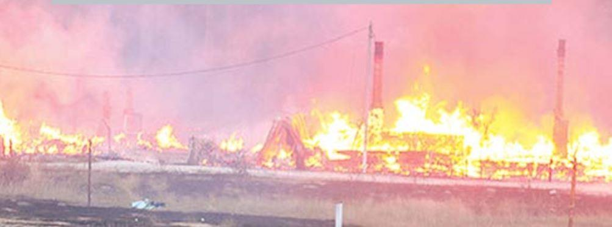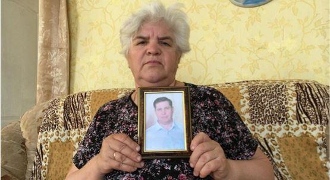 Nadezhda Litvinova avec le portrait de son fils décédéAndreï Litvinov (nom de code « Commissaire ») était né le 22 décembre 1975 à Snejnoe dont il fréquenta les écoles n°4 puis n°8, avant d'aller étudier au lycée technique Shterovski de Miousinsk spécialisé dans les métiers du secteur énergétique. Élève sérieux, il obtint de bons résultats tout au long de sa scolarité et fut ensuite employé dans le secteur du bâtiment où son souci du travail bien fait était très apprécié. Andreï participa aux premières manifestations se déroulant à Donetsk et à Snejnoe puis il organisa des checkpoints dans les environs de Snejnoe. Il s'occupa également de l'approvisionnement en nourriture et en armes des insurgés locaux et il contrôlait leurs activités.
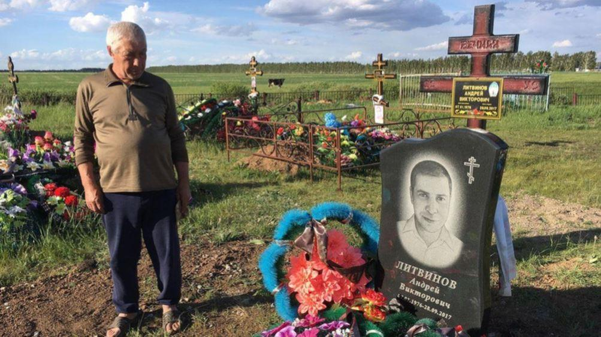Pavel Kroupitski était né le 18 septembre 1975 à Latyshevo. Il avait étudié à l'école de Dmitrovka puis au lycée technique commercial de Chakhtyorsk où il se spécialisa dans les systèmes réfrigérés. En novembre 1993 il partit effectuer son service militaire à Chabo, dans l'oblast d'Odessa et à son retour il commença à travailler dans l'industrie houillère. Père de deux fils, Pavel était très apprécié pour son caractère joyeux et sa disponibilité lorsqu'il fallait donner un coup de main. Comme ses deux autres camarades Nikolaï et Andreï, il avait participé à l'organisation du référendum du 11 mai 2014.
Yaroslav N. Youchine était né le 27 septembre 1985 dans cette ville avant d'étudier à l'école n°27 de Torez. Après son service militaire effectué en 2003 il travailla dans les transports puis dans le secteur minier. En 2014 il rejoignit les insurgés et combattit à Donetsk puis à Debaltsevo en février 2015 où il servit comme mitrailleur. Yaroslav perdit la vie le 11 février 2015 à Logvinovo en protégeant des civils et des camarades blessés. Lyoudmila Lysenko s'en souvient avec émotion :
« Il a été grièvement blessé, sa jambe a été arrachée. Il fallait que quelqu'un reste afin de couvrir la retraite. Yaroslav s'est proposé et s'est battu, on peut le dire, jusqu'à son dernier souffle, jusqu'à sa dernière goutte du sang. Quand le combat a été terminé, les nôtres [les insurgés de la Milice Populaire] sont revenus sur les lieux et ont vu qu'il y avait un grand nombre d'ennemis tués. Yaroslav a défendu ses camarades et des civils jusqu’à la dernière minute de sa vie. Il faisait partie d'une unité qui est basée actuellement près de Donetsk. Cette unité possède à ce jour un musée en l'honneur de Yaroslav, dans le livre il y a une photo prise dans ce musée. Le lit où dormait Yaroslav s'y trouve 9 ». D., un vétéran aussi présent, ajouta : « Ce lit n'est pas occupé et ne le sera plus jamais. Les membres de l'unité rendent visite à la mère de Yaroslav. Yaroslav a été enterré à Saour-Moguila, ses camarades s'occupent de sa tombe et amènent souvent sa mère avec eux. Tous les jours, lors de l'appel, le nom de Yaroslav est prononcé ».
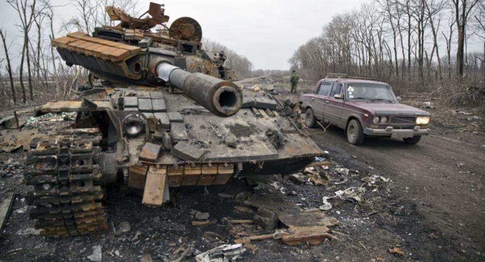Près du kourgane et de Yaroslav repose également Youri A. Gordeïtchouk (nom de code « General »), un autre combattant insurgé de Snejnoe. Youri était né le 3 juillet 1967 dans la région de Jytomyr puis il s'était installé avec ses parents à Snejnoe où il étudia à l'école n°4 puis à l'école professionnelle n°86. Après sa scolarité il commença à travailler à la mine « Voskhod » avant d'effectuer son service militaire au sein des garde-frontières. Depuis, Youri célébrait chaque année le Jour des Garde-Frontières qui était une fête importante pour lui. Après sa période sous les drapeaux il retourna travailler dans les mines « Voskhod » puis « Zarya » où il fut blessé à l'épine dorsale. Youri aimait les enfants et la nature, il se promenait souvent à la recherche de champignons et connaissait bien les forêts des environs. En juillet 2014 il rejoignit la Milice Populaire sans en parler à ses proches afin qu'ils ne se fassent pas de soucis pour lui. Il partit pour Dmitrovka et Latyshevo, où il garda le checkpoint 15 bis, puis il combattit à Marinovka et Stepanovka sur des positions avancées pour lesquelles il se portait toujours volontaire. Lors d'une permission il put voir les siens mais se sentait coupable d'être chez lui auprès de ses proches alors que ses camarades étaient au front. Il fut ensuite envoyé à Debaltsevo et tomba au champ d'honneur le 26 novembre 2014 à Nikishino.
Vyacheslav A. Lougovoï (nom de code « Slavan »), était né le 24 novembre 1969 à Lougansk et après y avoir effectué son service militaire il travailla comme chauffeur puis ouvrier dans une usine de Snejnoe fabriquant des machines. Lorsque le conflit éclata Vyacheslav rejoignit les insurgés sans en informer ses proches afin de ne pas les inquiéter. Après avoir gardé un checkpoint il partit pour Slavyansk qui était assiégée par les forces gouvernementales ukrainiennes et sauta sur une mine le 13 juin 2014 à Semenovka.
Nikolaï N. Mossine (nom de code « Mosya ») combattit aussi à Slavyansk et participa à la libération de Saour-Moguila. En classe de 8ème Mossine avait intégré les Komsomols de son école où il s'était fait remarquer par son patriotisme. Il étudia ensuite à l'Institut des Routes de Gorlovka puis fit son service militaire à Kostroma. Ses camarades appréciaient son optimisme et sa force de caractère. Mossine était une personne attentionnée et cordiale, cherchant toujours à aider son prochain. Sa mère se souvient qu'il était croyant et qu'il lui avait demandé de le bénir avant son départ au front. À Chirokino ils lui avaient offert une guitare afin qu'il leur joue des ballades d'Aleksandr Rozenbaum. Lyoudmila Lysenko se souvient que « Mossine fut transféré à Chirokino. C'était un sniper et un éclaireur. La nuit du 23 février [2015] il est parti en reconnaissance, il a marché sur une mine et a été mortellement blessé »10. Sa mère a conservé précieusement les médailles reçues par son fils « Pour la défense de Slavyansk », « Pour les faits d'armes » et « Pour la prise de Saour-Moguila ».
Dmitri V. Gaïsan (nom de code « Gashik ») était né le 22 juin 1983 à Snejnoe où il étudia à l'école n°10 puis à l'école professionnelle n°17 dont il sortit qualifié en tant qu'ajusteur-outilleur-serrurier. Il décida d'aller travailler dans une mine où le salaire était meilleur mais où le travail était dur, ce qui ne l'effrayait pas. Sa mère se souvient que Dmitri avait de nombreux amis, qu'il aimait aider les gens et que sa compagnie était très appréciée pour sa chaleur et son esprit. Lyoudmila Lysenko se rappelle que « Dima Gaïssan comme beaucoup d'autres avait aux alentours de 30 ans. Il était à Dmitrovka au moment où il y avait des tirs de mortiers. Les gens, en état de panique, ne savaient pas où courir pour se sauver. Dima, au lieu de partir, a commencé à reconduire toutes ces personnes. Un éclat d'obus lui a coupé une jambe et il est mort avant son arrivée à l'hôpital » le 12 juillet 201411.
Durant le conflit les femmes jouèrent aussi un rôle important comme le souligne Lyoudmila Lysenko : « Les femmes de notre ville sont très courageuses et je dis toujours que notre ville est une ville héroïque car elle a été attaquée tout de suite après Slavyansk. Elle s'est défendue et a tenu bon. Nous avons eu beaucoup de blessés. Au départ ces blessés étaient accueillis par les hôpitaux civils et ensuite un hôpital militaire a été formé. Nos femmes aidaient aux soins des blessés et leur préparaient de la nourriture »12. Parmi elles il y avait Marina V. Yourieva (nom de code « Bagheera »). Née le 11 janvier 1978, Marina avait étudié à l'école n°2 puis à l'école pédagogique de Chakhtyorsk avant de se réorienter vers le commerce. Lyoudmila Lyssenko explique que « Marina Yourieva, qui a laissé deux petits enfants orphelins, s'était engagée dans la Milice Populaire pour travailler comme cuisinière. La colonne de la Milice dont Marina faisait partie fut attaquée alors qu'elle était en marche près de Saour Moguila. Tous les véhicules ont été détruits et Marina a péri durant cette attaque », le 5 août 2014.13
Lyoudmila se souvient que « Parmi les plus jeunes il y avait Dmitri Baranov. Il n'avait que 20 ans. Il a été tué en août 2014 [le 6] au 43ème « blockpost ». 4 jours après, son père Sergueï Anatolievitch a aussi été tué près de Saour Moguila [à Marinovka]. Dima est enterré au cimetière d'Ovsyanka et Sergueï Anatolievitch est enterré à Dmitrovka ». 14 Ce dernier avait participé aux combats à Slavyansk en mai 2014 puis avait été blessé le 15 juillet, ce qui l'avait amené à être hospitalisé à Rostov-sur-le-Don. Lorsqu'il rentra chez lui le 1er août il s'aperçut que son fils n'était plus là et avait rejoint les insurgés. Lyoudmila ajoute qu'« Au 43ème « blockpost », le même jour, Belonojko, Pentchouk et Jarkov périrent aussi lorsque les chars de l'armée ukrainienne essayèrent de se frayer un passage vers notre ville ». 15
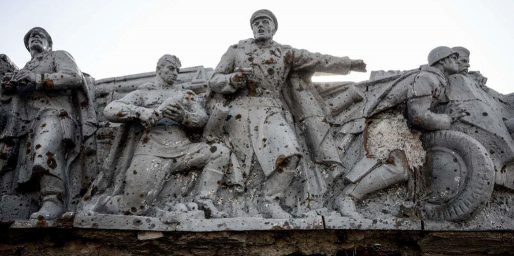Aleksandr G. Belonojko (nom de code « Tchétchène ») était né le 23 août 1963 à Grozny, en Tchétchnie, où ses parents étaient employés dans le secteur pétrolier. Après sa scolarité Belonojko travailla comme soudeur puis s'engagea dans l'armée et se maria. En 1991, suite à l'effondrement de l'URSS et aux troubles agitant la Tchétchénie, Belonojko quitta Grozny pour s'installer à Snejnoe avec sa famille. Le 11 juin 2014, au début du conflit, Aleksandr devint grand-père une seconde fois et cet événement fut un réel bonheur pour la famille Belonojko. Aleksandr avait en parallèle rejoint les insurgés mais ne l'avait pas révélé à ses proches afin de ne pas les inquiéter : chaque soir il rentrait – comme d'habitude – de bonne humeur, ne laissant rien transparaître de ses réelles activités.
Son camarade Denis V. Pentchouk (nom de code « Chakhtyor », « mineur ») qui périt aussi le 6 août 2014 au checkpoint n°43 était né le 4 mai 1980 à Petropavlovka dans l'oblast de Dniepropetrovsk. Après que sa famille se soit établie à Snejnoe il alla à l'école n°1 puis au lycée professionnel. Denis commença à travailler à Donetsk puis dans les mines « Oudarnik » (« Travailleur de choc ») et « Zarya » (« Aube »). Il était apprécié pour son esprit travailleur et responsable ainsi que son autorité naturelle. Sa mort au combat laissa sans père son jeune fils âgé à l'époque de 8 ans.
Youri A. Jarkov (nom de code « Ded », « grand-père ») était originaire de Snejnoe où il avait vu le jour le 13 mai 1954 et dont il avait aussi fréquenté l'école n°1. Après son service militaire Youri devint mécanicien pour bulldozers et travailla dans les lointaines régions de l'Extrême Orient russe, à Magadan, Khabarovsk, Komsomolsk-sur-l'Amour et Anadyr. Jarkov se rendit le 1er mai 2014 à Sebastopol, le 9 mai à Moscou pour assister au défilé de la victoire de 1945 puis retourna chez lui pour le référendum du 11 mai. Jarkov y participa activement avant de rejoindre les insurgés, de mettre en place des checkpoints et d'en assurer la garde.
Encore émue par le destin de chacun d'entre eux, la directrice de la bibliothèque poursuivit : « Guennadi Nikolaïevitch Jokhov était une personne peu ordinaire. Il avait un certain âge, il avait participé à la liquidation des conséquences de la catastrophe de Tchernobyl et était malade. Il prenait des médicaments et était invalide.
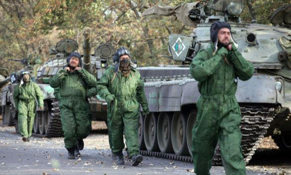Au départ il faisait partie d'un peloton d'artillerie et apportait des obus. Le chef du peloton s'aperçut des problèmes de santé de Guennadi Nikolaïevitch et le nomma adjudant-chef afin qu'il s'occupe des jeunes. Un jour, lors d'un bombardement, il a été mortellement blessé [le 20 janvier 2015]. Guennadi Nikolaïevitch écrivait des poésies, vous pouvez trouver ses poésies dans le livre. C'était une personne formidable, une belle âme ». 16 Pour avoir servi à Stepanovka et Donetsk Jokhov reçut à titre posthume la médaille « Pour faits d'armes » et la Croix de Saint-Georges.
Aleksandr V. Makagonov était né le 29 décembre 1980 et avait étudié à l'école n°4 puis à l'école professionnelle n°86 de laquelle il sortit diplômé comme soudeur. Il travailla dans une usine puis dans une mine. Aleksandr passait beaucoup de temps avec ses amis ou à surfer sur internet et il aimait se promener dans la campagne autour de Saour-Moguila dont il connaissait les meilleurs coins pour la cueillette des champignons. Après un voyage à Dniepropetrovsk et à Moscou il avait eu envie de voyager et voir le monde mais la guerre interrompit ses projets. Aleksandr s'impliqua dans l'organisation du référendum du 11 mai 2014 avant de rejoindre, le 26 juin 2014, le bataillon « Oplot » (« Rempart »). Ce bataillon d'infanterie motorisé était commandé par Aleksandr Zakhartchenko qui deviendra Premier Ministre puis Président de la République Populaire de Donetsk quelques mois plus tard. Makagonov combattit à Chakhtyorsk et dans les environs de Donetsk : « Il était tankiste. Un jour Sacha se trouvait à Debaltsevo alors que son char était en réparation. On lui a alors demandé de remplacer une personne manquante dans un autre tank. Lors d'un combat un obus a touché le char qui a explosé et Sacha a brûlé vif ». 17
Konstantin Prostomolotov était né le 4 mai 1979 au Kazakhstan soviétique et s'installa avec ses parents à Snejnoe à l'âge de 4 ans. Il étudia à l'école n°11 puis au lycée technique de Snejnoe avant d'effectuer son service militaire à Oujgorod. À son retour de l'armée il se maria, eut deux fils et commença à travailler à la mine « Oudarnik ». Konstantin était décrit par ses proches comme fort, dynamique et attentionné. Tatyana, une de ses anciennes collègues, ajoute qu'il était toujours joyeux, poli et travailleur. Après avoir rejoint les insurgés, Prostomolotov servit comme mitrailleur au sein d'un équipage de véhicule blindé de transport de troupes BTR et combattit dans la région de Donetsk. Il perdit la vie le 15 juin 2014 alors que son blindé revenait vers Dmitrovka après une attaque contre un checkpoint ukrainien : « Il a quitté cette vie comme un flambeau brûlant, comme c'est écrit dans le livre. Il faisait partie de l'équipage d'un véhicule blindé BTR. Lors d'un combat le blindé a été touché par un obus. Les autres membres de l'équipage ont pu se sauver, mais Konstantin, en proie aux flammes continua à tirer du blindé, roulant sans direction, jusqu'au dernier moment ». 18
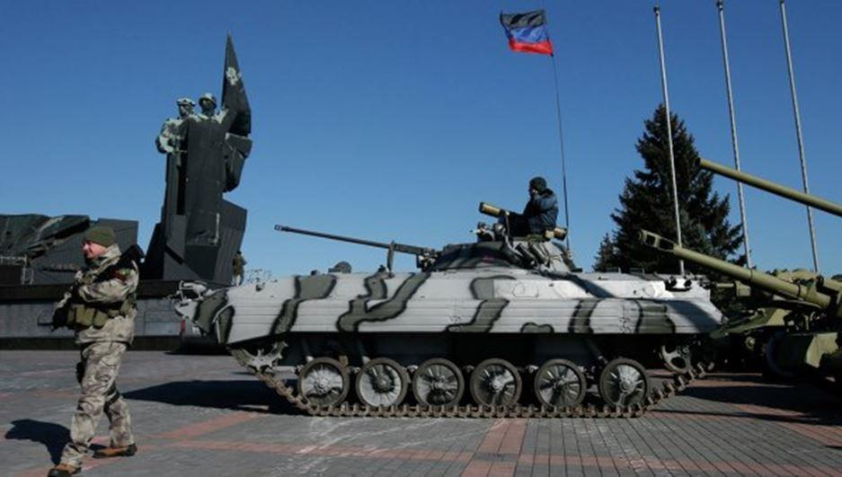Maksim G. Krasovski (nom de code « Ninja ») était né le 23 février 1993 à Snejnoe où il avait étudié à l'école n°3 avant de se spécialiser dans le secteur énergétique au lycée professionnel. Maxime parlait bien la langue anglaise et aurait souhaité poursuivre des études supérieures. Olga, son ancienne cheffe de classe, se souvient qu’« il était bon, doux et compatissant, tout à fait différent d'un combattant ».19 Maxime ne craignait aucun travail et était apprécié pour ses talents manuels ainsi que sportifs au football, au volley-ball et à la barre fixe. Durant le conflit il aida les habitants de Grigorievka à évacuer leur ville qui était occupée par les forces armées ukrainiennes. Lyoudmila Lysenko se rappelle qu’« Ensuite il a été envoyé du côté de Donetsk, à Spartak. Là-bas, à un endroit il y avait un ruisseau et on pouvait s'y approvisionner en eau. Il y avait un accord entre l'Armée ukrainienne et la Milice Populaire de ne pas ouvrir le feu au moment de l'approvisionnement en eau. Maxime et deux de ses camarades furent envoyés chercher de l'eau [le 30 octobre 2014]. Un sniper ennemi a tué Maxime. Le destin de ses deux camarades est inconnu. Ils ont peut-être été faits prisonniers ». 20
Mikhaïl Y. Litvinov avait vu le jour le 28 juillet 1985 à Snejnoe dont il fréquenta dans son enfance les écoles n°1 puis n°3. En 2005 Mikhaïl fit son service militaire au sein des troupes chargées de la protection navale de Simferopol et acquit la spécialité d'opérateur-pointeur d'artillerie. Sa mère le décrit comme un garçon ordonné, soigneux, qui était très attaché à son fils et qui aimait aider les autres. Mikhaïl rejoignit en juin 2014 les insurgés locaux et s'engagea dans le bataillon « Oplot » où il reprit sa spécialité militaire au sein d'un équipage de véhicule blindé BMP.
À la mi-juin il reçut son baptême du feu lorsque la colonne de blindés dans laquelle il se trouvait fut bombardée par l'aviation gouvernementale ukrainienne. Peu de temps avant sa mort Mikhaïl se rendit à l'église Saint Dmitri et remit un dernier message pour sa mère à l'archiprêtre Constantin. Mikhaïl mourut au combat le 5 août 2014 près de Kojevniya.
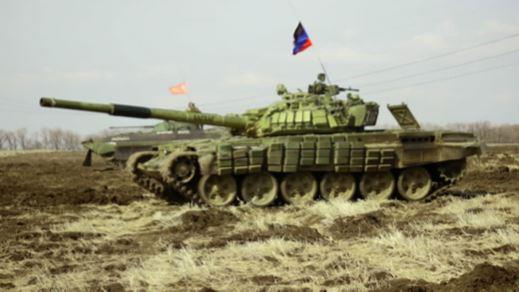Lyoudmila Lysenko désigne une des feuilles de papier recouvrant une partie du coin de la bibliothèque où a été érigé le petit mémorial : « Voilà une note intéressante. Micha Litvinov l'a laissé à Constantin pour sa maman, avant un des combats. Il a demandé de transmettre ce mot en cas de décès, il a péri en laissant derrière lui un petit garçon, son fils ».
« Salut maman ! Si tu lis cette lettre c'est que je ne suis plus ! Je savais ce que je faisais. Pardonne-moi et ne pleure pas. Ton fils cadet est un héros ! Parle souvent de moi à mon petit Sacha ! Je suis avec Dieu (…). Le soldat meurt pour que ses camarades vivent ! (…) Je vous remercie Dieu, ainsi que mes proches, vivez longtemps et aimez votre patrie et vos proches. L'ennemi veut avoir des esclaves mais ça ne se produire pas ! Moi, l'ange, je serai avec vous ! ».
Andreï A. Vybornyï était né le 13 mai 1973 à Artemovsk et deux plus tard il s'installa avec sa famille à Snejnoe où il suivit les cours de l'école n°8 puis ceux du PTU n°86 dont il sortit soudeur. Andreï aimait beaucoup le sport et pratiquait la boxe ainsi que la lutte. Après son service militaire il travailla dans une usine de construction mécanique puis à la mine « Severnaya ». Andreï se maria mais son épouse décéda par la suite.
Vadim N. Kamaritchev était né le 9 avril 1971 à Molodogvardeïsk puis sa famille s'installa à Snejnoe où il alla à l'école n°1. Vadim étudia ensuite à l'Institut de la Construction de Kharkov puis à l'Université de Makeevka. Lors de son service militaire son commandant lui proposa de rester dans l'armée et après sa période sous les drapeaux il préféra rentrer à Snejnoe où il travailla à la mine « Oudarnik » puis dans des entreprises du secteur minier où son sérieux était apprécié. Sa mort laissa seules sa fille Nastya et sa femme Lyoubov.
Dmitri A. Boudyak (nom de code « Chakhtyor », « mineur ») était né le 11 avril 1979 à Donetsk et en 1980 il suivit sa famille à Snejnoe, où il étudia à l'école n°10, avant d'entrer à l'Institut des Mines de Dniepropetrovsk. Il travailla ensuite comme mineur puis chef d'équipe dans les mines « Voskhod » et « Oudarnik ». Au printemps 2014 Dmitri fut un protagoniste actif des premières manifestations à Donetsk, aidant à mettre en place des barricades et des checkpoints. Il rejoignit les rangs du 1er escadron (insurgé) de Snejnoe au début des combats à Saour-Moguila. Un de ses camarades, Roman V. Antonov (nom de code « Kvadrat », « carré »), se souvient de lui comme d'une personne attentionnée, sensée et audacieuse. Dmitri n'avait pas peur d'aller au combat et il participa aux opérations militaires à Stepanovka, Saour-Moguila et Grigorievka. Il se porta ensuite volontaire pour Debaltsevo où il prit le commandement d'un escadron de reconnaissance. Dmitri perdit la vie le 22 août 2014 alors que lui et ses hommes étaient pris sous le feu des mortiers ennemis.
Vladimir M. Boutchok (nom de code « Penek », « la souche ») était né à Khmelnytsky le 9 mai 1967 au sein d'une famille d'ouvriers. Son père mourut alors que Vladimir était encore très jeune et avec sa mère ils s'installèrent à Snejnoe. Après avoir suivi les cours du lycée professionnel des mines il travailla à la mine « Severnaya » puis fut envoyé lors de son service militaire sur la frontière avec l'Afghanistan. À son retour il vécut à Mirgorod avant de retourner à Snejnoe, où il recommença à travailler dans une mine. Son esprit d'initiative, son courage et son caractère audacieux étaient très appréciés de ses collègues de travail comme de ses camarades de combat. Vladimir s'engagea dans la Milice Populaire de Snejnoe en août 2014 puis intégra le célèbre bataillon « Oplot » pour lequel il participa à de nombreuses opérations de reconnaissance. Il se distingua par ses capacités d'organisation et son expérience militaire acquise sur la frontière afghane.
Lyoudmila Lysenko se souvient qu'« il était atteint d'un cancer. Il était très audacieux car il préférait mourir au combat plutôt que d'une maladie. Il était originaire de la région de Khmelnytsky, ce qui était marqué dans son passeport. Vladimir Mikhaïlovitch prenait son vélo et partait en reconnaissance du côté ukrainien pour collecter des renseignements précieux car il était considéré comme un des « leurs » par les pro-gouvernementaux ukrainiens. Un jour Vladimir Mikhaïlovitch s'est retrouvé près de l'aéroport de Donetsk. Un des miliciens a été pris pour cible par un sniper ukrainien et ne pouvait même pas lever la tête. Vladimir Mikhaïlovitch a été témoin de cette scène. Il a alors sauté dans un véhicule abandonné et a couvert ce milicien en coupant la vue au sniper ». 21 Vladimir combattit aussi à Dmitrovka où il porta secours à d'autres insurgés blessés et à leurs commandants sous le feu ennemi.Vladimir avait été proposé pour la Croix de Saint-Georges mais il n'eut pas le temps de la recevoir car il fut tué le 15 octobre 2014 près de Chakhtyorsk.
Aleksandr A. Gloushenko (nom de code « Tchernyï », « le noir ») était né le 2 février 1979 à Snejnoe et ses proches, comme son institutrice de l'école n°6 de Torez, le décrivaient comme un enfant joyeux, bon et curieux d'apprendre. Aleksandr fit son service militaire au sein des troupes parachutistes et grâce à ses excellents états de service il fut recruté par le Ministère de l'Intérieur ukrainien. Honnête et dégoûté par la corruption qui y sévissait, Aleksandr quitta par la suite ce ministère et travailla dans une mine.
Au début de la crise ukrainienne il aida à organiser le référendum du 11 mai 2014 puis rejoignit les insurgés locaux et combattit à Debaltsevo. Son commandant félicita même ses parents pour son caractère et son courage. Les parents d'Aleksandr purent entendre une dernière fois la voix de leur fils au téléphone le 15 février 2015.
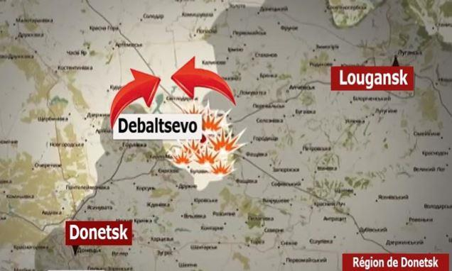Konstantin I. Kournik (nom de code « Koubinets », le « Cubain ») était né le 27 mai 1960 à Snejnoe où il suivit les cours de l'école n°9, de l'école professionnelle n°86 puis du lycée technique des mines. Il travailla ensuite dans une usine de construction mécanique puis dans les mines « Myousskaya » et « Zarya » où il devint chef d'équipe puis représentant de la direction. Kournik rejoignit les insurgés après l'attaque aérienne des forces gouvernementales ukrainiennes sur Snejnoe le 15 juillet 2014 et périt au combat avec l'équipage de son véhicule blindé BTR quelques semaines plus tard, le 5 août.
Aleksandr V. Lesnoï (nom de code « Bourjouï », le « bourgeois ») était né le 16 juillet 1977 à Snejnoe où il étudia à l'école n°1 puis au lycée technique des mines n°86. Il travailla dans les mines « Zarya » puis « Progress » (« Progrès »). Au début du conflit il prit le commandement du « blockpost » n°15 avant d'être envoyé à Spartak. Il périt le 27 septembre 2014 dans les combats à l'aéroport de Donetsk.
Aleksandr A. Medyanik était aussi né à Snejnoe, le 28 décembre 1982, dont il suivit les cours de l'école n°9 et du lycée technique n°86. Il travailla comme serrurier avant de rejoindre l'Institut d'Économie de Kharkov. Après son service militaire il fut employé à la mine « Zarya » où il fut très apprécié par ses collègues. Medyanik aimait se promener avec ses enfants, jouer aux échecs et lire des livres. Il entra dans les rangs insurgés à la mi-juin 2014 et servit d'abord au bureau du commandement avant de se porter volontaire pour aller repousser les troupes gouvernementales ukrainiennes qui s'étaient rapprochées de Snejnoe. Le 25 juillet, alors que les combats avaient commencé à Dmitrovka, il brisa une attaque de l'infanterie ukrainienne avec sa mitrailleuse avant de perdre la vie.
Alekseï N. Serdechnyï (nom de code « Sytch ») était né le 26 septembre 1968 à Maïkop, dans le Caucase et l'année suivante il s'installa avec sa famille à Snejnoe. Alexeï étudia au lycée technique des mines puis fit son service militaire dans l'Armée Rouge en Afghanistan. À son retour il travailla comme chauffeur puis à la mine « Voskhod ». Au début du conflit dans le Donbass il garda des checkpoints puis combattit près de Dmitrovka. Il perdit la vie le 22 juillet 2014.
Sergueï V. Gretchko était né le 9 octobre 1991 à Snejnoe dans une famille nombreuse et il avait perdu ses parents très tôt. Sergueï travaillait dur afin de soutenir ses proches et il aimait le sport. Il étudia à l'école professionnelle n°110 de Torez puis commença à travailler dans les mines. Lorsque le conflit éclata il s'occupa d'un checkpoint puis fut envoyé combattre à Donetsk où il fut tué par un sniper des forces ukrainiennes le 13 octobre 2014.
Sergueï S. Belkine était né le 23 février 1961 à Snejnoe. Il en fréquenta l'école n°4 puis l'école professionnelle n°86 dont il sortit soudeur. Sergueï travailla à la mine n°104 puis effectua son service militaire dans les troupes de défense antiaérienne à Noguinsk, près de Moscou. Ses compétences techniques et ses talents musicaux furent très appréciés de ses camarades. À son retour il alla travailler à la mine n°10 puis entra au Ministère de l'Intérieur et termina son instruction à l'école de la Milice de Maryoupol en 1989. Sergueï avait une conception noble de son métier et considérait que sa mission était de protéger les citoyens paisibles et de les aider dans les situations difficiles. En 2006 une blessure le força à devenir réserviste et il travailla alors comme chauffeur d'autobus. En juin 2014 il rejoignit la Milice Populaire et servit comme chauffeur, conduisant les insurgés au combat et réparant les véhicules blindés. Sergueï fut tué le 20 septembre 2014 et reçut à titre posthume le 9 mai 2015 la médaille de « Saour-Moguila ».
À l'instar des habitants de Snejnoe, les résidents de nombreux villages et de nombreuses villes du Donbass se sont aussi mobilisés en faveur de l'insurrection et ont également connu un destin tragique. Dans ces localités le souvenir du sacrifice de ces héros ordinaires est toujours vivant.
G-E. J.
Notes et sources :
1 М. Я. Олейников, Саур-Могила : Путеводитель, 1976 in « Саур-Могила », Wikipedia : https://ru.wikipedia.org/wiki/Саур-Могила
2 Anna Matveeva, Through Times of Trouble: Conflict in Southeastern Ukraine Explained from Within, Lexington Books, 2017, p.159
3 Zakhar Prilepine, Ceux du Donbass, Chroniques d'une guerre en cours, Éditions des Syrtes, 2018, p.192
4 « Бои за Саур-Могилу (2014) », Wikipedia : https://ru.wikipedia.org/wiki/Бои_за_Саур-Могилу_(2014)
5 Anna Matveeva, Through Times of Trouble: Conflict in Southeastern Ukraine Explained from Within, Lexington Books, 2017, p.159
6 Ibid., pp.159-160
7 « Igor Strelkov and Militia Briefings, July 14-16, 2014 », Slavyangrad, 16/07/2014 : https://slavyangrad.org/2014/07/16/briefings-july-14-16-2014/
8 Людмила Лысенко, Здравствуй Дед, Медиа-Полис, 2016
9 Entretien avec Lyoudmila Lysenko, Snejnoe, 2016
10 Ibid.
11 Ibid.
12 Ibid.
13 Ibid. ; Людмила Лысенко, Здравствуй Дед, Медиа-Полис, 2016, p.62
14 Entretien avec Lyoudmila Lysenko, Snejnoe, 2016
15 Ibid.
16 Ibid.
17 Ibid.
18 Ibid.
19 Людмила Лысенко, Здравствуй Дед, Медиа-Полис, 2016, p.38
20 Entretien avec Lyoudmila Lysenko, Snejnoe, 2016
Partager cette page